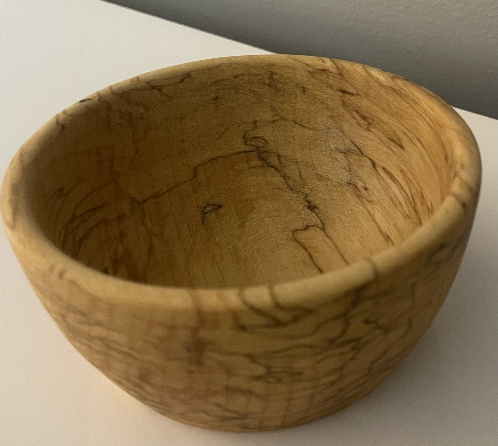

Where it all began.
2024-07-21
Where I am now.
2024-07-21

There is something to be said about how wonderful trees are. They are nice, provide shade, and just make you want to get a chunk of them to turn into something new. No? Maybe you're not a woodworker then. - BA
2024-07-21
2024-07-21